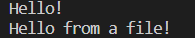
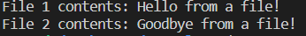

Promises, Async Await
by Danny Silitonga
Examples are adapted from JavaScript Live Lessons and
JavaScript Cookbook
Presentation Outline
- Synchronous Code
- Callbacks
- Promises
- Async/Await
- Getting remote data using Fetch
- Wrap up
Synchronous Code
Here is an example:
console.log('About to define x...')
let x = 5;
console.log('About to define y...')
let y = 10;
console.log('About to add the variable together...')
let sum = x + y
console.log('The sum is ' + sum);
The output:

Asynchronous Code
- Get around blocking functions that prevent other code from being executed. Go to blocking example
- Callbacks were designed for such purpose. One could pass callbacks to what would otherwise be blocking functions in JS.
- This is especially important when one has a long running operations, such as reading a file. Go to callback example
Blocking Functions
Here is an example:
let fs = require('fs');
let fileContents = fs.readFileSync('./hello.txt', 'utf-8');
console.log(fileContents);
Callbacks
Here is an example:
let fs = require('fs')
function printFileContents(error, fileContents){
if (error) {
console.log('ERROR!');
} else {
console.log(fileContents);
}
}
fs.readFile('./hello.txt', 'utf-8', printFileContents);
console.log('Hello!');
- The code would read the helo.txt file.
- It would assign file contents to variable fileContents.
- It would then print fileContents.
Callback Output
- Here is the output: 
- Output shows earlier code does not block other code to run. Check out Callbacks code again
- Asynchronous code allows other code to run
- Although advantageous, this could also lead to problems
Callback Refactored
let fs = require('fs')
fs.readFile('./hello.txt', 'utf-8',
function printFileContents(error, fileContents){
if (error) {
console.log('ERROR!');
} else {
console.log(fileContents);
console.log('Hello!');
}
});
Promises
- Provide another way to work with callbacks
- Provide better code readibility than using callbacks
let fs = require('fs');
fs.promises.readFile('./hello.txt', 'utf-8')
.then(function(fileContents) {
console.log(fileContents);
console.log('Hello!');
})
.catch(function(error){
console.log(error);
});
Promises Also Allows Multiple Operations
Here is an example:
let fs = require('fs');
fs.promises.readFile('./hello.txt', 'utf-8')
.then(function(fileContents) {
console.log('File 1 contents: ' + fileContents);
return fs.promises.readFile('./goodbye.txt', 'utf-8')
})
.then(function(file2Contents) {
console.log('File 2 contents: '+ file2Contents);
})
.catch(function(error){
console.log(error);
});
Output from Multiple Promises

Async Await for Even Better Readibility
let fs = require('fs');
async function readFiles() {
try {
let fileContents = await fs.promises.readFile(
'./hello.txt', 'utf-8');
console.log('File 1 contents: ' + fileContents);
let file2Contents = await fs.promises.readFile(
'./goodbye.txt', 'utf-8');
console.log('File 2 contents: ' + file2Contents);
} catch (error) {
console.log(error);
}
}
readFiles();
Requesting Remote Data with Fetch, Async Await
- Fetch allows developers to make requests and manipulate response
- Fetch returns responses as promise
Fetch Example
const fetch = require("node-fetch")
const url = 'https://api.nasa.gov/planetary/apod?api_key=DEMO_KEY';
const url2 = 'https://api.nasa.gov/neo/rest/v1/neo/3542519?api_key=DEMO_KEY'
async function fetchRequest() {
let response = await fetch(url);
let data = await response.json();
console.log("Data from first link")
console.log(data);
let response2 = await fetch(url2);
let data2 = await response2.json();
console.log("\nData from second link")
console.log(data2);
}
fetchRequest();
Promises, Async Await Wrap Up
- Provide powerful tool to handle expensive operations, such as opening and reading a file
- Can be used to pull local or remote data